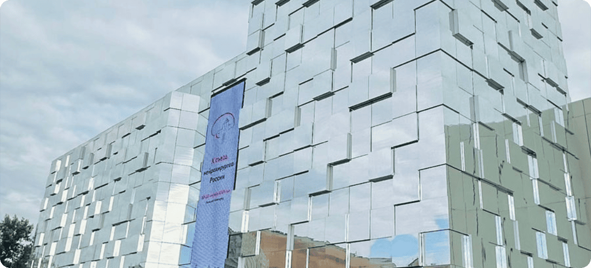

В Нижнем Новгороде состоялся десятый съезд нейрохирургов России

С 10 по 13 сентября 2024 года в городе Нижний Новгород состоялся десятый съезд нейрохирургов России.
Съезд охватил обсуждение широкого спектра актуальных проблем современной нейрохирургии, включая
проведение образовательных курсов по спинальной нейрохирурги, сосудистой нейрохирургии, актуальным
вопросам функциональной нейрохирургии, радиохирургии (модераторы: академики Д.Ю. Усачев и В.В. Крылов,
члены-корреспондент РАН Н.А. Коновалов, профессор РАН, д.м.н. Самочерных К.А., профессор, д.м.н.
Олюшин В.Е., профессор, д.м.н. Улитин А.Ю., профессор, д.м.н. Иванова Н.Е., д.м.н. Ким А.В., д.м.н.
Гуляев Д.А., к.м.н. Нездоровина В.Г., к.м.н. А.Е. Петров и многие другие). На пленарных и секционных
заседаниях съезда рассматривались и широко обсуждались проблемы, сосудистой нейрохирургии,
нейроонкологии, боевых повреждений ЦНС, дегенеративных заболеваний позвоночника, опухолей спинного
мозга и позвоночника, нарушений ликвородинамики, функциональной нейрохирургии, нейрохирургии детского
возраста, черепно-мозговой и травмы позвоночника и спинного мозга, хирурги периферических нервов.
Для нашей команды стало большим удовольствием принять участие в столь значимом мероприятии! Благодарим организаторов за доверие!